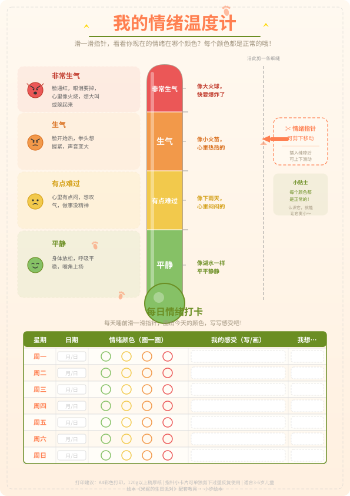
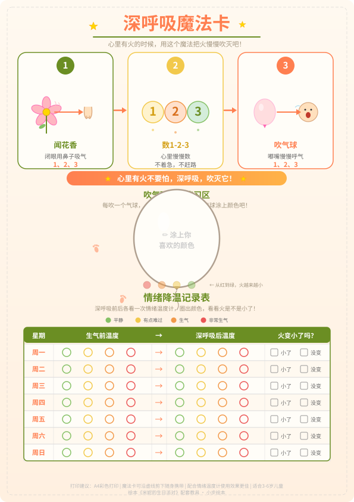
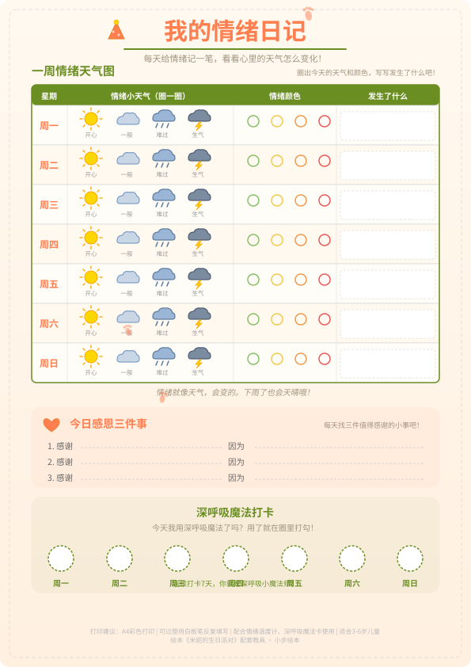

小步绘本
米妮的生日派对
一个关于生气、和好与感恩的温暖童话
互动教具
点击「打印此页」可直接打印教具图，剪下即可使用。
教具1
情绪温度计

四色刻度温度计（绿=平静、黄=有点难过、橙=生气、红=非常生气），配有可滑动指针和身体信号小贴士。底部设每日情绪打卡区，孩子每天用指针指向自己的情绪颜色。
打印建议：彩色打印最佳（四色刻度需彩色才有效果）。建议过塑后用白板笔反复打卡，或打印多张每周换一张。
教具2
深呼吸魔法卡

随身携带的魔法卡，用"闻花香"比喻吸气、"吹气球"比喻呼气，三步法图示引导。配吹气球涂色练习区和情绪降温记录表，帮助孩子掌握深呼吸技巧。
打印建议：彩色打印，建议缩小打印成口袋卡片大小，方便孩子随身携带。可过塑增加耐用性。
教具3
我的情绪日记

一周情绪天气图，每天用颜色和天气图标记录情绪（晴天=开心、雨天=难过、雷电=生气）。配每日感恩三件事记录区和深呼吸魔法打卡区，一周结束时做情绪总结。
打印建议：彩色打印（天气图标和颜色需彩色）。建议一次打印4-5张备用，每周换一张。可过塑后用白板笔反复填写。
练习任务卡
5个情绪管理实践任务，从易到难，把"认识情绪"变成好玩的冒险。
1
最易
情绪猜猜看
- 和孩子面对面坐着，家长先做一个表情（开心、生气、难过、害怕），让孩子猜猜是什么情绪。
- 换孩子做表情，家长来猜。猜对后问问孩子："你做这个表情的时候，身体有什么感觉？"
- 用情绪温度计教具，让孩子指出对应的颜色。
- 升级版：用绘本里的角色来玩，"米妮蛋糕掉了的时候，她是什么表情？"
"我们来做表情游戏！妈妈先来——猜猜我现在是什么心情？"（从游戏入手，让孩子先学会识别他人的情绪，再慢慢学会识别自己的。）
2
较易
我的情绪温度计
- 拿出情绪温度计教具（或和孩子一起画一个），认识四个颜色代表的情绪。
- 问孩子："你现在在什么颜色？"让孩子用指针指向自己的情绪。
- 每天早晚各打卡一次，记录一周的情绪变化。
- 周末一起回顾："这周你在哪个颜色最多？那天发生了什么？"
"我们来量一量你的情绪温度吧！现在指针指向哪里？"（用量化的方式帮孩子认识情绪，让抽象的"我感觉不好"变成具体的"我在橙色"。）
3
中等
深呼吸魔法练习
- 拿出深呼吸魔法卡，和孩子一起学习"闻花香+吹气球"三步法。
- 家长说"魔法时间到"，孩子就开始：吸气（闻花香）3秒，呼气（吹气球）3秒，重复3次。
- 每天练习一次，在魔法卡上打卡。坚持一周可以换一个小奖励。
- 当孩子情绪激动时，温柔地提醒："我们要不要用一下魔法？"
"这是米妮用的魔法哦！闻花香——吹气球——闻花香——吹气球……"（用故事里的比喻让孩子觉得深呼吸是个有趣的"魔法"，而不是"任务"。约定一个暗号"魔法时间到"，比直接说"你冷静一下"更容易被接受。）
4
较难
和好三步法
- 当孩子和朋友/家人发生冲突时，等情绪稍微平复后，引导孩子用"和好三步法"。
- 第一步——说出感受："我刚才很____，因为____。"（用情绪温度计辅助）
- 第二步——倾听对方："你呢？你刚才是什么感觉？"
- 第三步——一起想办法："我们下次可以怎么做？"
- 完成后给孩子一个拥抱："你和米妮一样棒，学会了说出自己的感受！"
"还记得米妮是怎么做的吗？她先深呼吸，然后说出自己的感受，最后和大家一起想办法。你也来试试好不好？"（把绘本里的方法迁移到真实生活中，让孩子有参照榜样。注意：一定要等孩子情绪平复后再进行，不要在情绪高峰时强制执行。）
5
挑战
感恩三件事+情绪日记
- 每天睡前，和孩子一起回顾今天的三件好事（不管多小都可以）。
- 用情绪日记教具记录：今天情绪是什么颜色？发生了什么事？感恩的三件事是什么？
- 深呼吸魔法打卡：今天有没有用深呼吸？什么场景下用的？
- 一周结束后，和孩子一起翻看日记，找规律："你发现了吗？每次你生气的时候，深呼吸之后是不是好多了？"
- 庆祝完成一周打卡，颁发"情绪魔法师"称号。
"今天有什么开心的事想告诉妈妈吗？哪怕是很小很小的也行。"（培养孩子关注积极事件的习惯，同时通过日记追踪情绪模式。坚持记录会让孩子越来越了解自己的情绪规律，这是终身受用的能力。建议家长也一起做，和孩子分享自己的情绪日记，做榜样。）